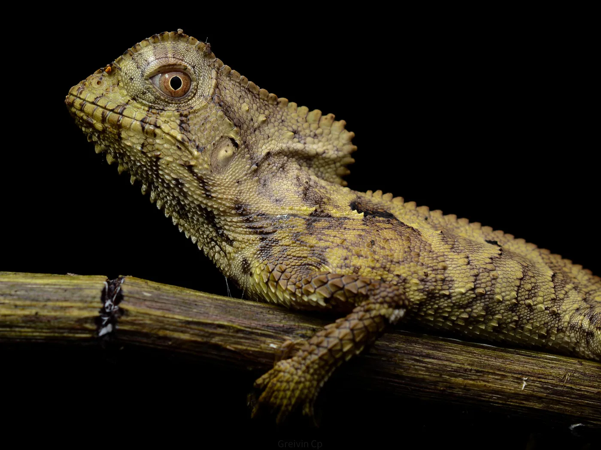
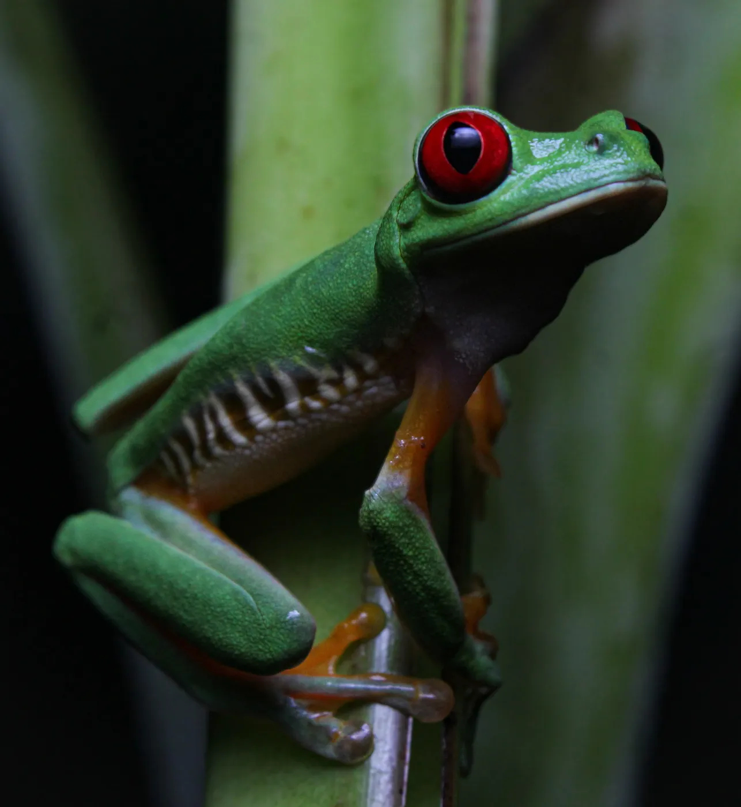
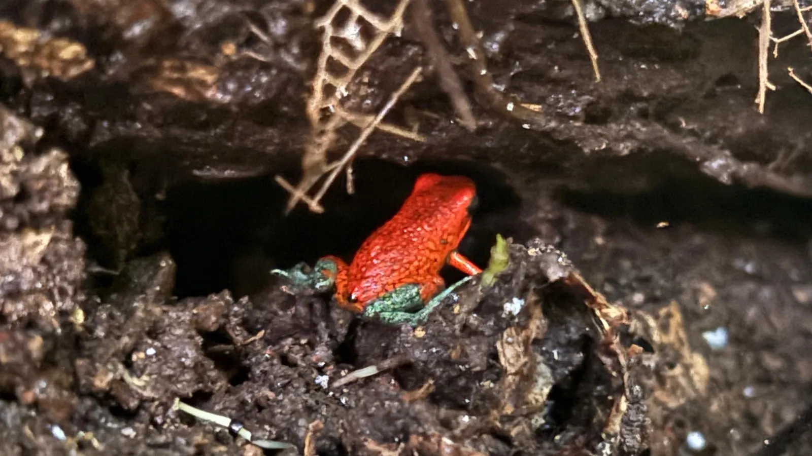
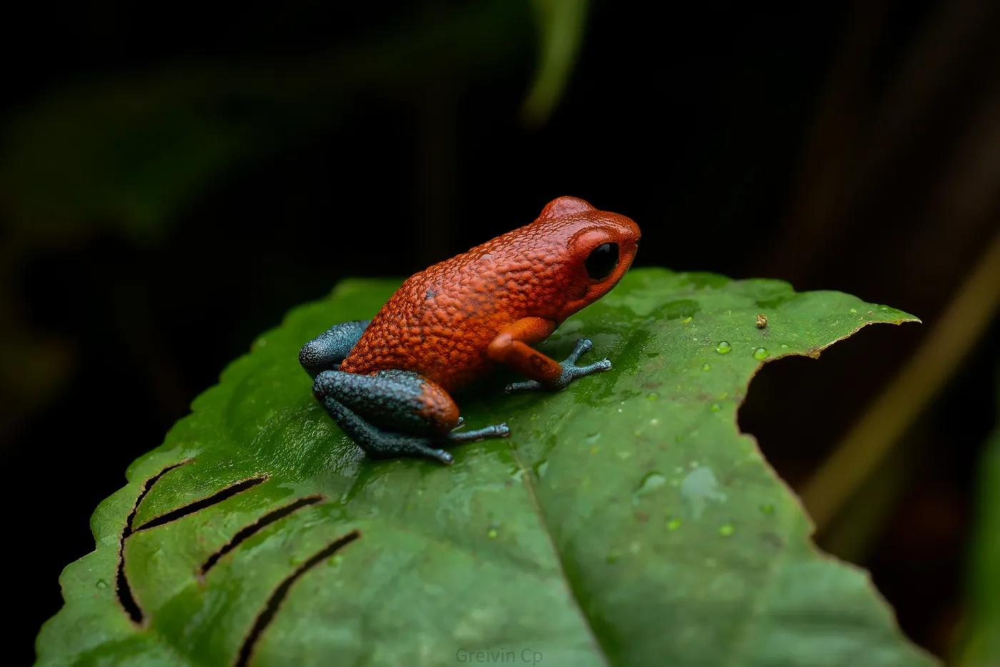
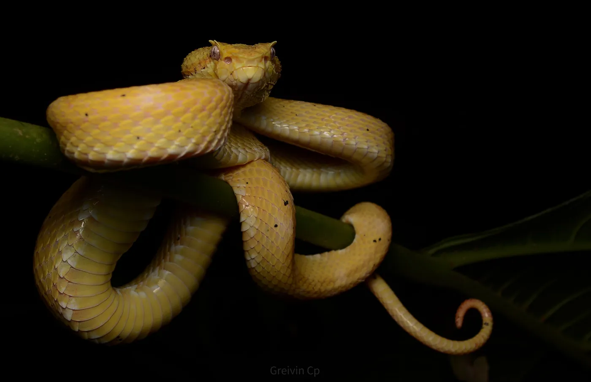
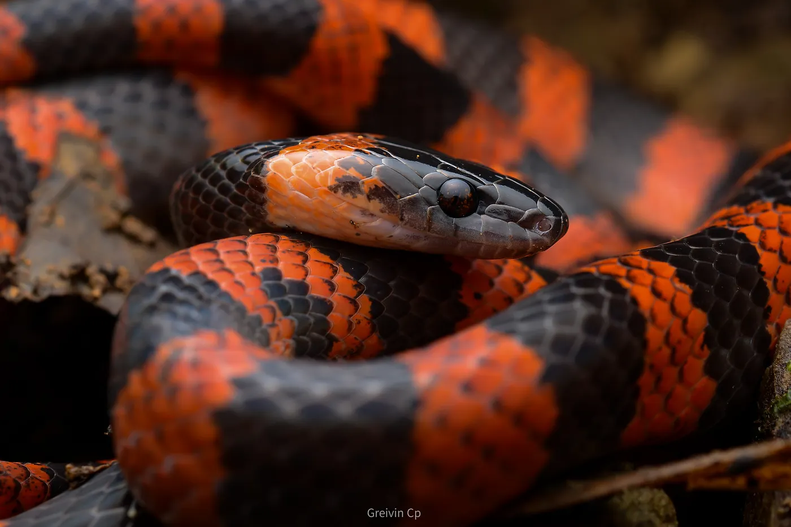
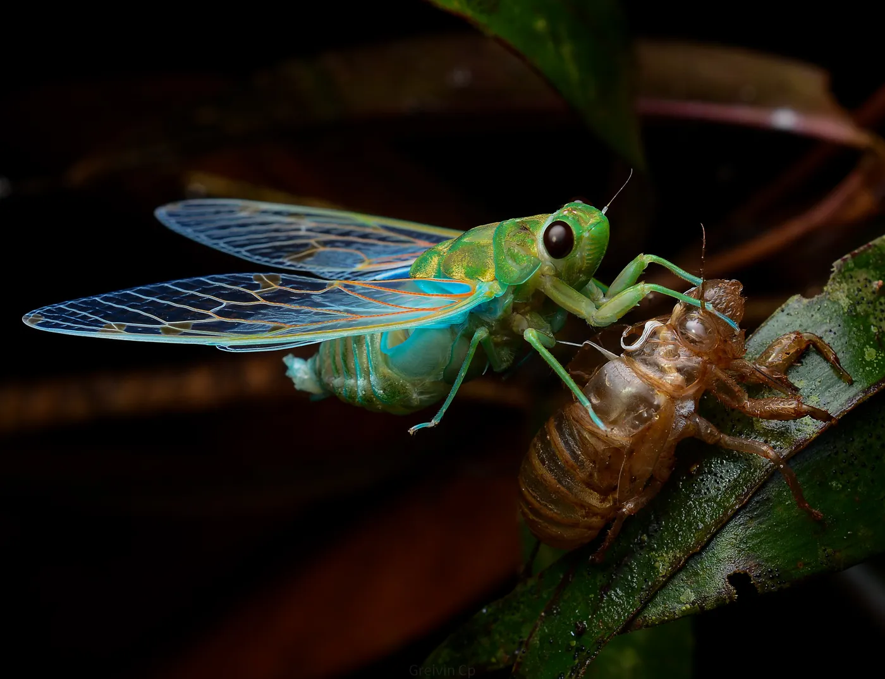
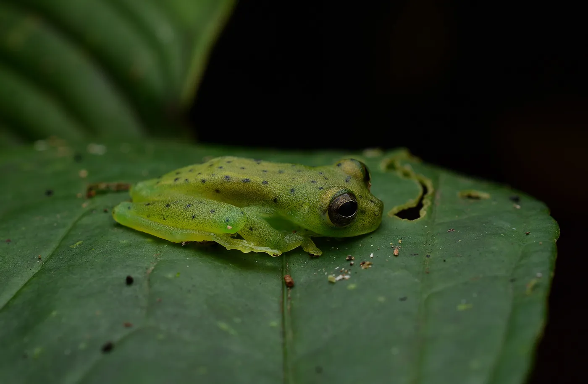
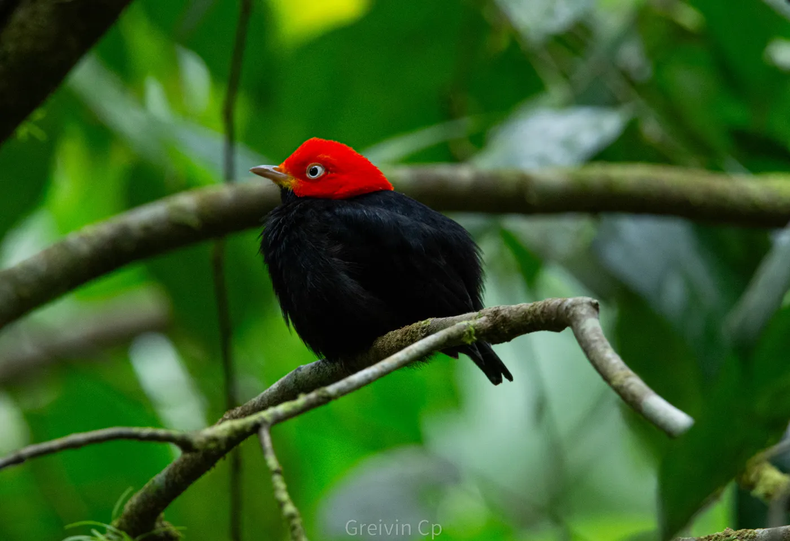
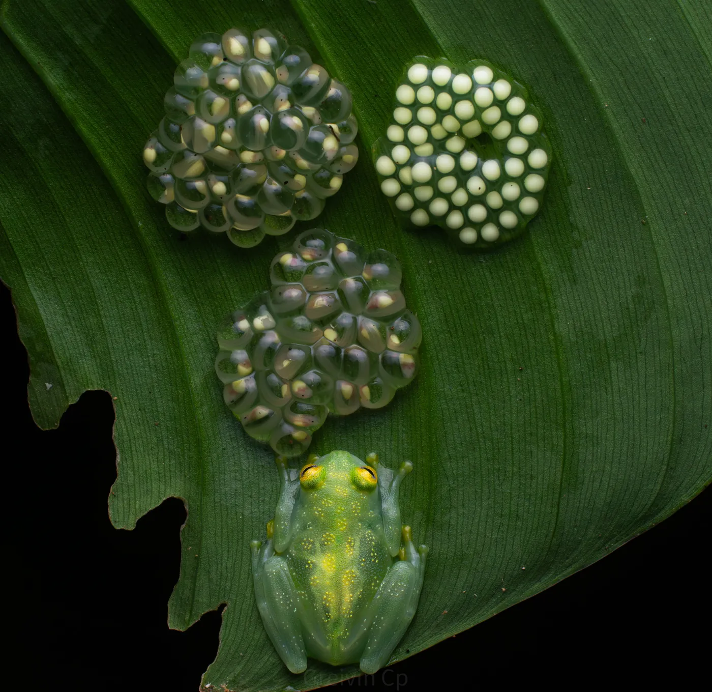

Night adventure · Costa Ballena
Night Wildlife Tour
When the sun goes down, the rainforest comes to life. Discover frogs, snakes, insects and fascinating creatures with expert local guides.
The experience
The rainforest that wakes up at night
Much of the tropical wildlife is nocturnal. On a guided flashlight walk, the Costa Ballena rainforest reveals colorful frogs, snakes, insects, spiders and sleeping birds you'd rarely see by day. It's a perfect experience for nature photography and for the whole family.
Walks are always led by authorized local guides, on safe trails and with full respect for the animals and their habitat. Times, duration and meeting point are confirmed with you before booking.
Recommendations for your visit
These are general recommendations; always follow your guide's instructions.
- Closed, comfortable walking shoes.
- A flashlight or headlamp (some tours include one).
- Long-sleeved shirt and long pants.
- Insect repellent.
- A camera with a good night or macro mode.
- Water and a light rain jacket.
Nocturnal wildlife








